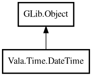

DateTime
Object Hierarchy:

Description:
public class DateTime : Object
Immutable value object for date-time operations.
Content:
Static methods:
- public static DateTime fromUnixTimestamp (int64 ts)
Creates DateTime from UNIX timestamp.
- public static DateTime now ()
Returns current local date-time.
- public static DateTime of (int year, int month, int day, int hour, int min, int sec)
Creates a date-time from components.
- public static DateTime? parse (string s, string format)
Parses text into DateTime.
Creation methods:
Methods:
- public int day ()
Returns day.
- public int dayOfWeek ()
Returns day of week.
- public Duration diff (DateTime other)
Returns difference from other as Duration.
- public string format (string format)
Formats date-time with strftime format.
- public int hour ()
Returns hour.
- public bool isAfter (DateTime other)
Returns whether this is after other.
- public bool isBefore (DateTime other)
Returns whether this is before other.
- public DateTime minusDays (int days)
Returns a new date-time minus days.
- public int minute ()
Returns minute.
- public int month ()
Returns month.
- public DateTime plusDays (int days)
Returns a new date-time plus days.
- public DateTime plusHours (int hours)
Returns a new date-time plus hours.
- public int second ()
Returns second.
- public int64 toUnixTimestamp ()
Returns UNIX timestamp in seconds.
- public int year ()
Returns year.
Inherited Members:
All known members inherited from class GLib.Object
- @get
- @new
- @ref
- @set
- add_toggle_ref
- add_weak_pointer
- bind_property
- connect
- constructed
- disconnect
- dispose
- dup_data
- dup_qdata
- force_floating
- freeze_notify
- get_class
- get_data
- get_property
- get_qdata
- get_type
- getv
- interface_find_property
- interface_install_property
- interface_list_properties
- is_floating
- new_valist
- new_with_properties
- newv
- notify
- notify_property
- ref_count
- ref_sink
- remove_toggle_ref
- remove_weak_pointer
- replace_data
- replace_qdata
- set_data
- set_data_full
- set_property
- set_qdata
- set_qdata_full
- set_valist
- setv
- steal_data
- steal_qdata
- thaw_notify
- unref
- watch_closure
- weak_ref
- weak_unref